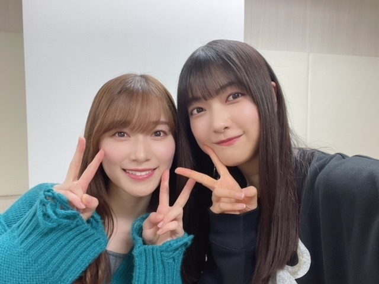
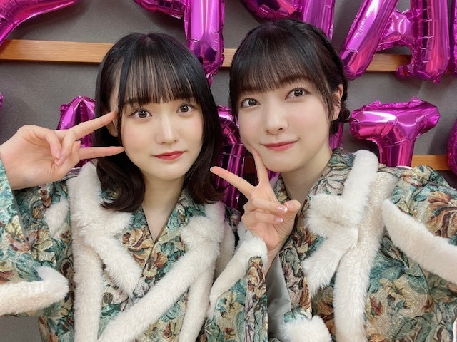
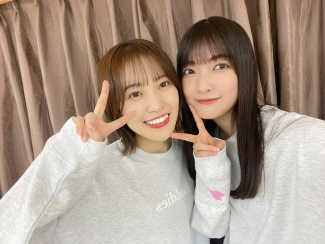
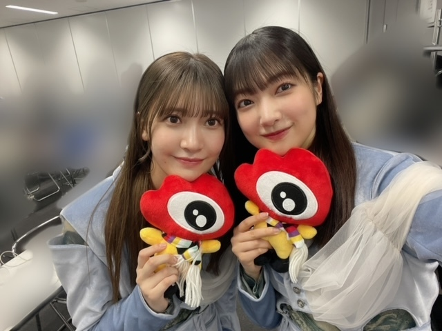
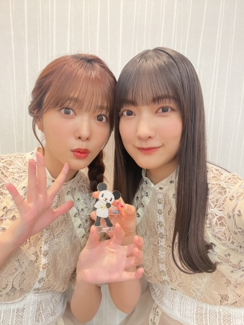
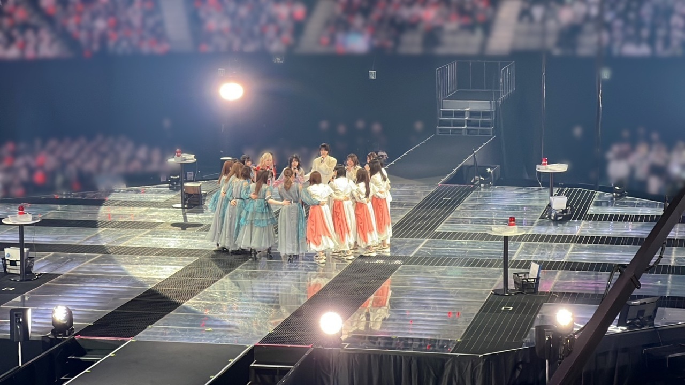

マヨネーズを使い切った日も
小指をぶつけた日も
割り箸を開けたら一緒に入ってた爪楊枝が床に落ちてしまった日も
毎日毎日、みんながんばっていて
そんな毎日の中に
わくわくした気持ちや楽しみをプレゼントするのが自分の役目だと思っています！
5thシングル、これまでより1列前になってお届けできること
そして、カップリング曲にも参加できること
応援してくださるみなさんのおかげです
いつもありがとうございます🫧
こうして一つずつ、良い報告ができることがみなさんへのプレゼントになっていたら嬉しいです、、


センターにはれなぁ、きらちゃんも一緒で、、！！
本当に色んな、同じ感情を経験してきた仲間なのでとってもとっても嬉しいです！
こうして一緒に切磋琢磨できている今が
無駄な時間は無かったと思わせてくれます
5thシングルの活動も、みなさんへ楽しみをプレゼントする気持ちで大切に取り組みます！
ぜひ楽しみにしていてください〜*



🤍12月31日（土）23:45〜
TBS「CDTVライブ！ライブ！年越しスペシャル！」に出演させていただきます✨
初めての髪型をしてみた、、
ぜひご覧ください〜！
🤍1月4日（水）発売の
「日経エンタテインメント！」さんから、
菅井友香さんの連載を引き継がせていただくことになりました✨
欅坂46時代から繋げてくださったバトンです
友香さんの書籍、
「あの日、あんなことを考えていた」
「Wアンコール」
のようにいつか1冊の本にするのが夢です！
ぜひチェックしていただけたら嬉しいです
2022年、たくさん笑った1年でした
ありがとうございました！
年末ゆったりお過ごしください
また年が明けたら書きますね〜🐰

毎日ありがとうございます
大園玲